Introdução aos Notebook e Base de Dados
Este módulo oferece uma introdução ao Jupyter Notebooks e ao Google Colaboratory, explorando suas funcionalidades e estrutura, incluindo células de código e células de texto. Além disso, abordamos os principais bancos de dados públicos para dados de células únicas e outros bancos de dados de expressão gênica, contendo informações sobre humanos e outros organismos. Para potencializar o aprendizado, disponibilizamos exercícios práticos para acessar, explorar e analisar esses bancos de dados, permitindo que os usuários desenvolvam habilidades essenciais na manipulação de dados biológicos.
Você conhece o Jupyter Notebooks?
O Jupyter Notebooks são um conjunto de ferramentas que combina códigos executáveis, textos com informações, visualizações e outros elementos em um único documento. Amplamente usado em análises de dados, aprendizado de máquina e em análises computacionais, compatível com múltiplas linguagens de programação, sendo o Python a mais popular. Sua interface intuitiva simplifica a exploração dos dados e experimentos, documentados em tempo real.
Aqui, nós temos células de texto e células de código que atendem diferentes propostas para organizar e apresentar o conteúdo dentro dos notebooks.
Células de texto
- São usadas para adicionar explicações, descrições e formataçã usando Markdown ou HTML.
- Você pde inserir cabeçalhos, listas, links, equações e outros elementos para documentar seu trabalho e fazer isso de forma mais compreensível (para que outras pessoas que queiram utilizá-lo também).
- Selecione o + Markdown presente na barra de ferramentas superior.
- Digite seu texto na célula usando Markdown para formatação (por exemplo, # para cabeçalhos, ** para textos em negrito e * para itálico).
- Clique fora da célula ou pressione Shift + Enter para renderizar o formato de texto.
Adicionar uma célula de texto:
Células no Jupyter
Células de código- São utilizadas para escrever e executar códigos de programação, principalmente em Python.
- Elas permitem testar algoritmos, manipular dados e criar gráficos com os resultados exibidos diretamente abaixo das células executadas.
- Selecione o + Code presente na barra de ferramentas para inserir uma célula de código abaixo da célula ativa.
- Digite seu código na célula e pressione Shift + Enter para executá-lo.
Adicionar uma célula de texto:
# Teste o código em python aqui
test = 4
Aqui eu posso escrever lindos textos.
Notas:
1: Se você desejar visualizar páginas ou vídeos na web através desse notebook, será necesário adicionar as seguintes extensões:
Extensão Google or Extensão Firefox
2: Se voce deseja criar um Colab notebook com o kernel R, você pode fazer isso através do link:
Colab com R ou Outra forma
Google Colaboratory
O Google Colab é uma plataforma gratuita baseada em nuvem que permite criar, rodar e compartilhar Jupyter notebooks diretamente em seu navegador. O jupyter suporta linguagem como Python e permite acesso a poderosas recursos computacionais como GPUs e TPUs, sendo ideal para relizar tarefas de aprendizado de máquinas e de ciência de dados.
Além disso, é integrado com o Google Drive, permitindo fácil armazenamento e colaborações em tempo real.
Explorando repositórios de Single-Cell RNA-seq
Nesta atividade, exploraremos repositórios e ferramentas online para análise de dados de RNA-seq de células individuais. Navegaremos por diversos bancos de dados, incluindo o (https://www.ebi.ac.uk/gxa/sc/home), Human Cell Atlas Data Portal (https://data.humancellatlas.org/), CELLXGENE (https://cellxgene.cziscience.com/), SRA (https://www.ncbi.nlm.nih.gov/sra), GEO (https://www.ncbi.nlm.nih.gov/geo/), (https://panglaodb.se/), CellType (https://celltype.info/), and CellTypist (https://www.celltypist.org/), para descobrir e explorar conjuntos de dados de RNA-seq de células individuais. Por meio deste exercício prático, você aprenderá a acessar, visualizar e interpretar dados de RNA-seq de células individuais usando recursos online.
Objetivos:
- Explorar repositórios e ferramentas de dados de RNA-seq de células individuais
- Aprender a acessar e visualizar dados de RNA-seq de células individuais
- Entender como interpretar dados de RNA-seq de células individuais
Observação: Esta atividade foi elaborada para ser concluída em seu próprio ritmo, e você pode realizar os exercícios em seu próprio ritmo.
Single Cell Expression Atlas
O Single Cell Expression Atlas é um repositório online que fornece acesso a uma vasta coleção de conjuntos de dados de RNA-sequenciamento de células únicas de vários organismos e tecidos. O atlas permite que os usuários explorem e comparem perfis de expressão gênica em diferentes tipos de células, tecidos e condições.
Practical Exercises:
1. Explore a Interface Geral do Single Cell Expression Atlas:
- Acesse o site do Single Cell Expression Atlas. Você pode acessar o site através do seu próprio navegador ou do navegador incorporado ao final desta sessão neste caderno: https://www.ebi.ac.uk/gxa/sc/home
- Uma das vantagens deste repositório é a ampla gama de organismos com dados de células únicas disponíveis, abrangendo espécies de Animais, Plantas, Fungos e Protistas. Navegue pela página, explorando as diferentes espécies disponíveis e explore aquela de seu interesse para aprofundar seus conhecimentos.
- Explore também o outro conjunto de experimentos disponíveis, que inclui dados do Human Cell Atlas, Fly Cell Atlas, Malaria Cell Atlas, COVID-19 Data Portal e iniciativas discovAIR.

2. Buscar um Conjunto de Dados de Interesse:
- Ao selecionar uma espécie ou coleção de experimentos de interesse, você terá acesso a uma lista de experimentos vinculados a esse organismo/iniciativa.
- Lá, você pode selecionar experimentos com base em diferentes variáveis, incluindo o Reino do organismo, a Coleção de Experimentos e o Tipo de Tecnologia. Você também pode explorar outros recursos, como o Título do estudo, os Fatores Experimentais (por exemplo, parte do organismo, estado de desenvolvimento, idade, etc.) e o Número de Células disponíveis.
- Lá, você também pode selecionar o conjunto de experimentos de interesse para baixar os arquivos de quantificação bruta, os arquivos de contagens normalizadas e o arquivo de delineamento do experimento.


3. Visualize e Explore os Dados Disponíveis:
- Selecione um gene ou tipo de célula de interesse e navegue pelo navegador interativo, explorando diferentes aspectos dos dados disponíveis.
- Selecione conjuntos de dados com base em "Tipo de célula inferido - rótulos de ontologia" ou "Parte do organismo".
- Selecione um conjunto de dados de interesse e explore todos os dados disponíveis.
- Visualize os perfis de expressão gênica usando os gráficos interativos (por exemplo, t-SNE, mapa de calor).
- Visualize marcadores genéticos e aproveite outros recursos interessantes do repositório.

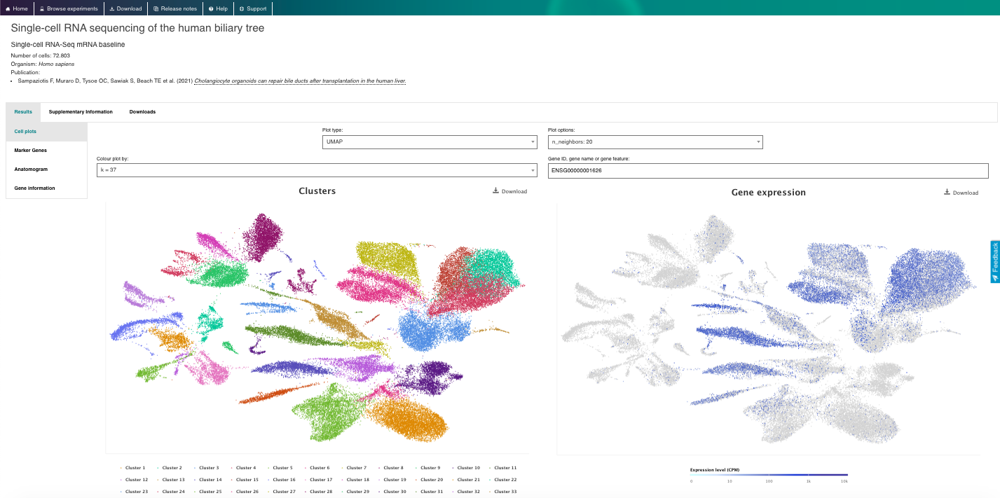

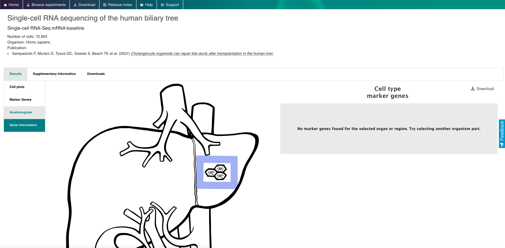
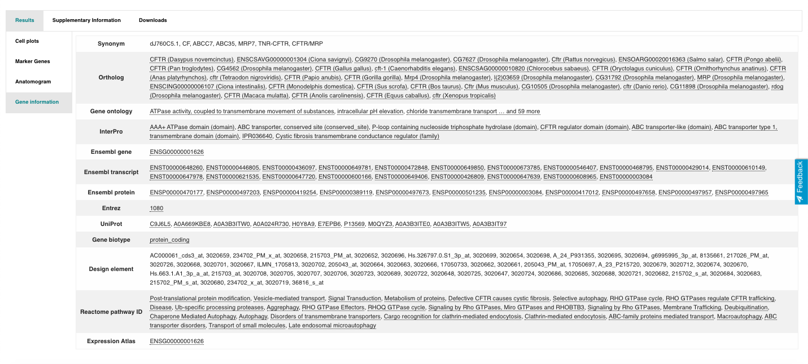

4. Agora aproveite o repositório, brincando com os dados e genes de interesse. Você pode usar o navegador incorporado disponível abaixo ou o navegador principal do seu computador: https://www.ebi.ac.uk/gxa/sc/home
Human Cell Atlas, Data portal
Breve Descrição:O Human Cell Atlas Data Portal é um repositório online que fornece acesso a uma vasta coleção de conjuntos de dados de sequenciamento de célula única e transcriptômica espacial de vários tecidos e tipos de células humanas. O portal é o principal repositório da iniciativa Human Cell Atlas e permite que os usuários explorem, visualizem e analisem perfis de expressão gênica em diferentes tipos de células, tecidos e condições gerados pelo consórcio.
Exercícios Práticos:
1. Explore a Interface Geral do Portal:
- Acesse o site do Human Cell Atlas Data Portals: https://data.humancellatlas.org/
- Explore as funcionalidades gerais do site, visualizando os dados disponíveis e como contribuir com os dados.


2.Pesquisar e Explorar um Conjunto de Dados de Interesse:
- Explore os conjuntos de dados disponíveis, navegando pelos Projetos, Amostras e Arquivos disponíveis. Utilize os filtros disponíveis para realizar uma seleção mais específica.
- Após selecionar um conjunto de dados específico, navegue pelas abas Visão Geral, Metadados, Matrizes, Download e Exportação.
- Verifique se o conjunto de dados permite uma exploração mais aprofundada em outro Portal de Análise (por exemplo, UCSC Genome Browser ou CELLXGENE).
- Verifique a possibilidade de exportar os dados disponíveis para análise na solução em nuvem Terra. Observe que esta é uma plataforma privada de terceiros.

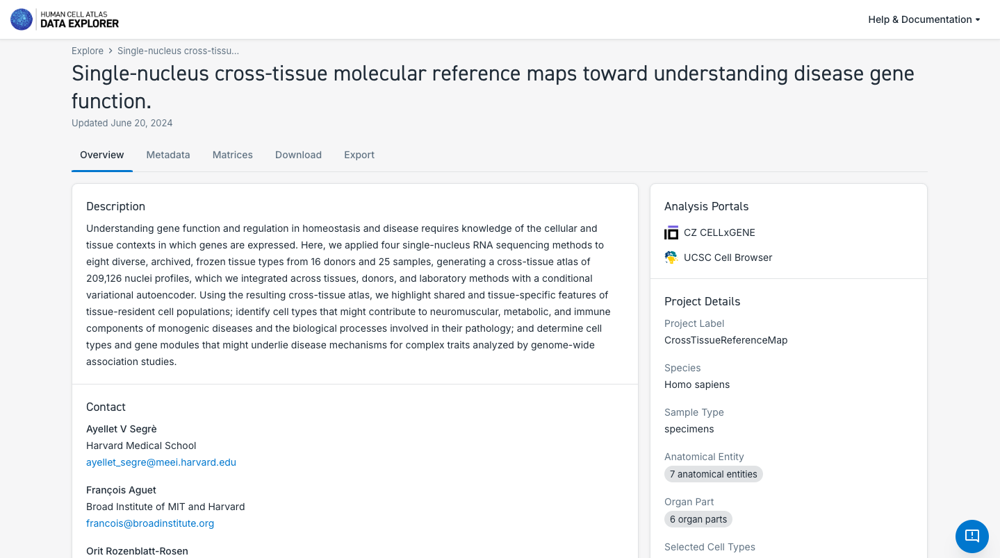
3. Pesquisar e Explorar os Atlas de Redes Biológicas:
- Observe que cada rede possui conjuntos de dados, mas, no momento, apenas Pulmão e Sistema Nervoso possuem atlas unificados disponíveis.
- Navegue pelas diferentes rede, explorando os dados e atlas disponíveis.
- Explore as diferentes particularidades dos componentes dos atlas, como o número de tecidos, o estado da doença, o número de células e a possibilidade de explorá-los mais a fundo no CELLxGENE ou baixando os dados.

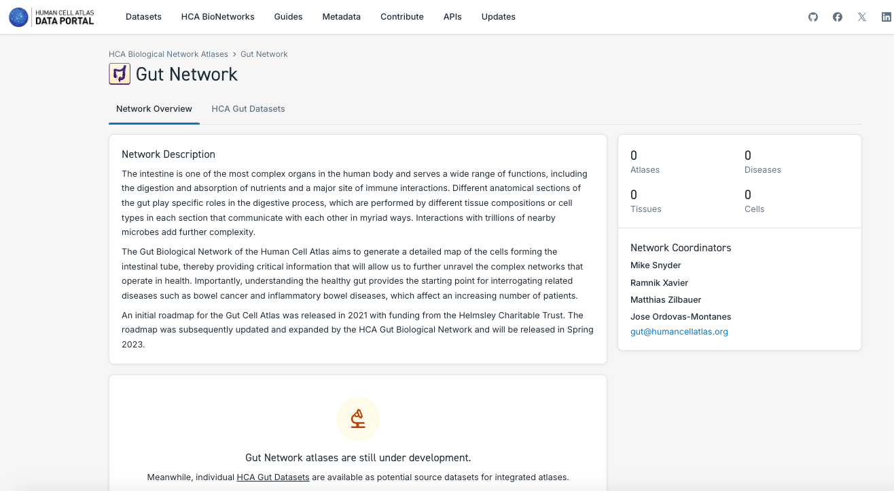

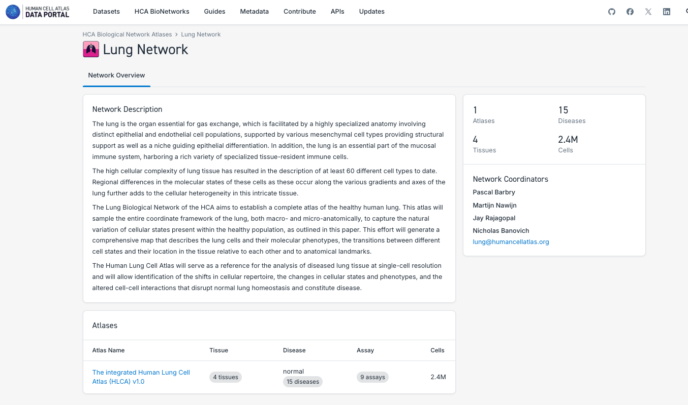

4. Explore os guias disponíveis para saber mais sobre todas as funcionalidades e diferentes aspectos do Portal de Dados do HCA:
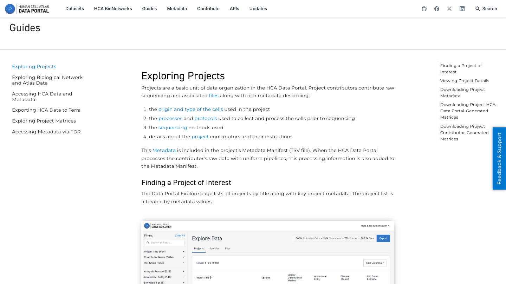
5. Agora aproveite o repositório, brincando com os dados e genes de interesse. Você pode usar o navegador incorporado disponível abaixo ou o navegador principal do seu computador: https://data.humancellatlas.org/
CellxGENE
Breve Descrição:O CELLxGENE é um portal web desenvolvido pela Chan Zuckerberg Initiative (CZI) que permite a exploração e análise interativas de dados de RNA-sequencing de células individuais. Ele oferece uma interface amigável para visualizar e comparar perfis de expressão gênica em diferentes tipos de células, tecidos e condições.
Exercícios Práticos:
1. Explore a Interface Geral do Portal:
- Acesse o site do CELLxGENE: https://data.humancellatlas.org/
- O CELLxGENE oferece diversas ferramentas que permitem explorar e analisar dados de células individuais com mais detalhes.
- Navegue pelas Coleções e Conjuntos de Dados disponíveis e selecione um de seu interesse para explorar mais a fundo. Você pode usar a opção "Filtros" para selecionar os dados de acordo com diferentes aspectos de interesse (por exemplo, tipo de célula, doença, etnia autorrelatada, sexo).

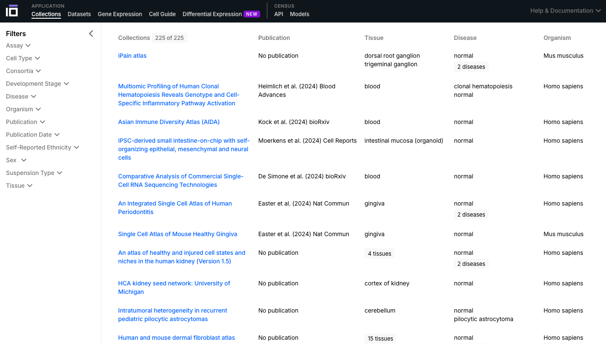


2. Explore um Conjunto de Dados de Interesse:
- Explore as diferentes funcionalidades disponíveis. Ative a visualização por as cores para cada célula disponível com base no tipo de célula, estágio de desenvolvimento, etnia, sexo, doença (se disponível), etc.
- Experimente as células, tente explorar os diferentes gráficos disponíveis e obtenha diferentes visualizações dos dados de acordo com suas preferências.
- Selecione dois grupos de células de seu interesse para identificar os genes com maior expressão diferencial. Faça isso com base em suas preferências: tipo de célula, sexo, estado da doença, etc. Altere as cores de um dos genes com expressão diferencial de interesse.
- Experimente as diferentes funcionalidades disponíveis para explorar ainda mais seu conjunto de dados de interesse.


3. Explore o Gene Expression Functionality:
- Selecione o conjunto de dados de interesse com base nos Filtros; adicione uma lista de interesse e visualize sua expressão nos diferentes tipos de células.
- Explore o gráfico, observando os níveis de expressão e a porcentagem de células que expressam aquele gene.

4. Explore Cell Guide Functionalitys:
- Selecione uma célula ou tecido de interesse e navegue por sua ontologia.
- As células podem ter diferentes subtipos, portanto, são classificadas com base em uma ontologia.
- A ontologia celular (CL) é uma estrutura padronizada para descrever e categorizar tipos de células com base em suas características, funções e relacionamentos. Ela fornece uma linguagem comum e um conjunto de termos para definir e anotar tipos de células em diferentes espécies, tecidos e conjuntos de dados.
- Navegue pela célula ou tecido de seu interesse, explorando sua descrição, ontologia, genes marcadores e dados disponíveis.


5. Explore a Differential Expression Functionality:
- Selecione os grupos para os quais deseja realizar uma análise de expressão diferencial com base no organismo, tecido, tipo de célula, doença, etnia, sexo, entre outras opções disponíveis.
- Neste exemplo, identificamos os genes diferencialmente expressos de acordo com o sexo em células B do cólon.

6. Explore o CELLxGENE Census:
- Familiarize-se com a plataforma Census, que permite acessar, consultar e analisar todos os dados de RNA de célula única do CELLxGENE.
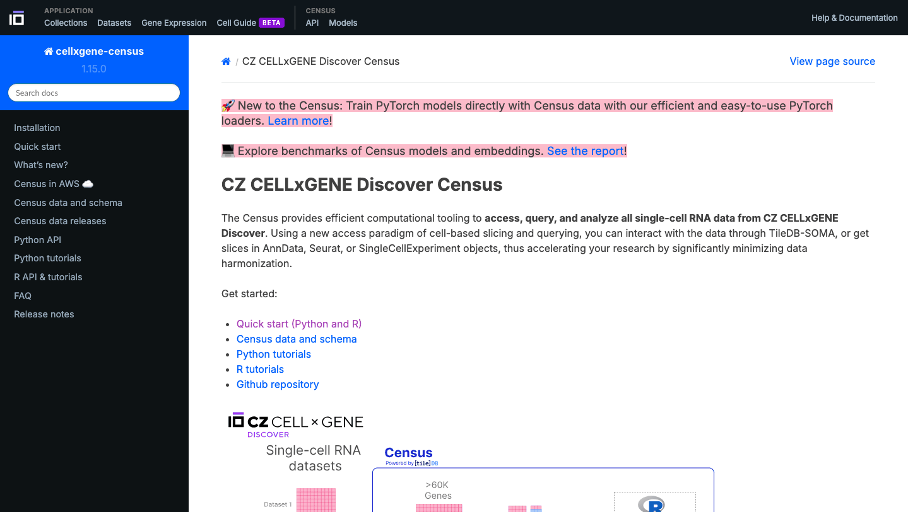
- Agora aproveite o repositório, interagindo com os dados e genes de interesse. Você pode usar o navegador incorporado disponível abaixo ou o navegador principal do seu computador: https://cellxgene.cziscience.com/
Panglao DB
Breve Descrição:O PanglaoDB é um banco de dados para a comunidade científica interessada na exploração de experimentos de sequenciamento de RNA de células únicas em camundongos e humanos. Coletamos e integramos dados de múltiplos estudos e os apresentamos por meio de uma estrutura unificada. Apesar de estar atualmente descontinuado, é muito útil para explorar genes marcadores.
Exercícios Práticos:
1. Explore a Interface Geral do Portal:
- Acesse o site do PanglaoDB: https://panglaodb.se/
- Navegue pelas opções de Busca para explorar o repositório.
- Você pode avaliar a expressão de um gene de interesse.
- Você também pode explorar marcadores celulares do tipo de célula de interesse.


2. Agora aproveite o repositório, brinque com os dados e genes de interesse. Você pode usar o navegador incorporado disponível abaixo ou o navegador principal do seu computador:
CellTypist
Breve Descrição:CellTypist é uma plataforma web projetada para facilitar a identificação, classificação e anotação de tipos de células. Ela fornece uma interface amigável para que pesquisadores anotem e classifiquem tipos de células em seus próprios dados.
Exercícios Práticos:
1. Explore a Interface do Portal Geral:
- Acesse o site do CellTypist: https://www.celxltypist.org/
- Navegue pela Enciclopédia disponível. Explore mais profundamente um grupo de células de seu interesse.
- Em "Recursos", navegue pelos modelos disponíveis; explore os órgãos ali disponíveis, bem como tenha acesso ao pacote Python.
- Na página "Início", explore a ferramenta automática para anotar seus próprios dados.
- Acesse os tutoriais disponíveis para se aprofundar nas funcionalidades da plataforma.
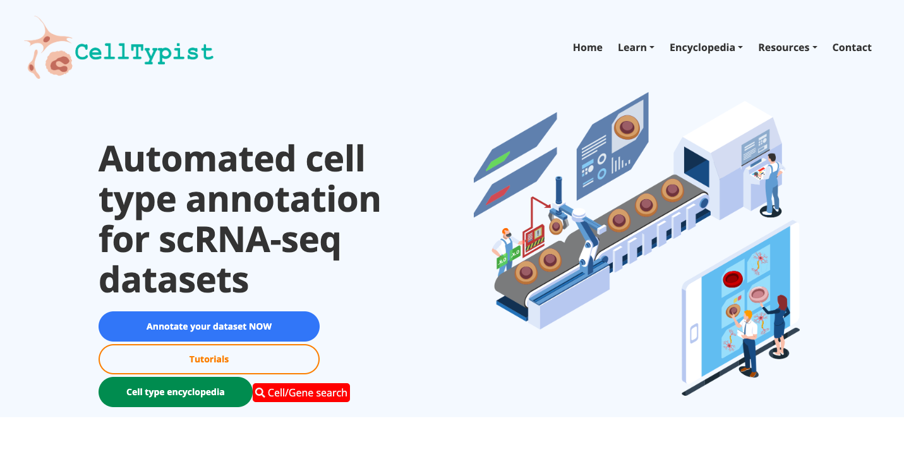


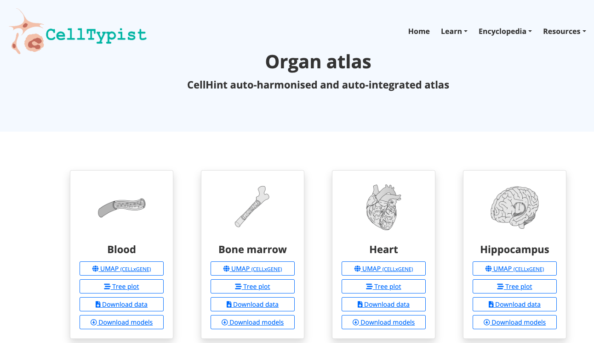

2. Agora aproveite a plataforma, brincando com os dados e genes de seu interesse. Você pode usar o navegador incorporado disponível abaixo ou o navegador principal do seu computador: https://www.celltypist.org/
GEO (Gene Expression Omnibus)
Breve Descrição:O GEO é um banco de dados público abrangente que arquiva e distribui gratuitamente dados genômicos funcionais de microarray, sequenciamento de última geração e outras formas de alto rendimento. É um recurso inestimável para pesquisadores, apoiando a descoberta de novos insights sobre a função, regulação e expressão gênica; apoiando a reutilização de dados.
Exercícios Práticos:
1. Explore a Interface do Portal Geral:
- Acesse o site do GEO: https://www.ncbi.nlm.nih.gov/geo/
- Pesquise um conjunto de dados de interesse, usando, por exemplo, as seguintes palavras-chave: "single cell heart"
- Explore os conjuntos de dados públicos relacionados a experimentos com coração de célula única (ou relacionados às palavras-chave utilizadas). Selecione um para obter mais informações sobre esse estudo.
- Navegue pelas amostras disponíveis.
- Avalie se eles seguiram os princípios FAIR ao depositar seus dados.


2. Agora, aproveite o repositório, explorando os conjuntos de dados de seu interesse. Você pode usar o navegador integrado disponível abaixo ou o navegador principal do seu computador: https://www.ncbi.nlm.nih.gov/geo/
SRA (Sequence Read Archive)
Breve Descrição:O SRA é um banco de dados público abrangente que arquiva e distribui gratuitamente dados de sequenciamento de alto rendimento, incluindo RNA-seq, DNA-seq e outras formas de dados de sequenciamento de nova geração (NGS).
Exercícios Práticos:
1. Explore a Interface do Portal Geral:
- Acesse o site do SRA: https://www.ncbi.nlm.nih.gov/sra
- Pesquise um conjunto de dados de interesse, usando, por exemplo, as seguintes palavras-chave: "single-cell heart"
- Filtre o resultado de acordo com a fonte, plataforma de sequenciamento, organismo de interesse ou outros recursos disponíveis.
- Explore os conjuntos de dados públicos relacionados a experimentos cardíacos de célula única (ou relacionados às palavras-chave utilizadas). Selecione um para obter mais informações sobre esse estudo.
- Navegue pelas amostras disponíveis.
- Avaliar se seguiram os princípios FAIR ao depositar seus dados.


2. Agora aproveite o repositório, brincando com os conjuntos de dados de seu interesse. Você pode usar o navegador incorporado disponível abaixo ou o navegador principal do seu computador: https://www.ncbi.nlm.nih.gov/sra
NOTA:
Ademais, existe o SRA Explorer, uma ferramenta interativa de visualização de dados do SRA, que facilita a navegação e o acesso aos dados brutos armazenados no SRA, permitindo busca e download de dados eficientes.